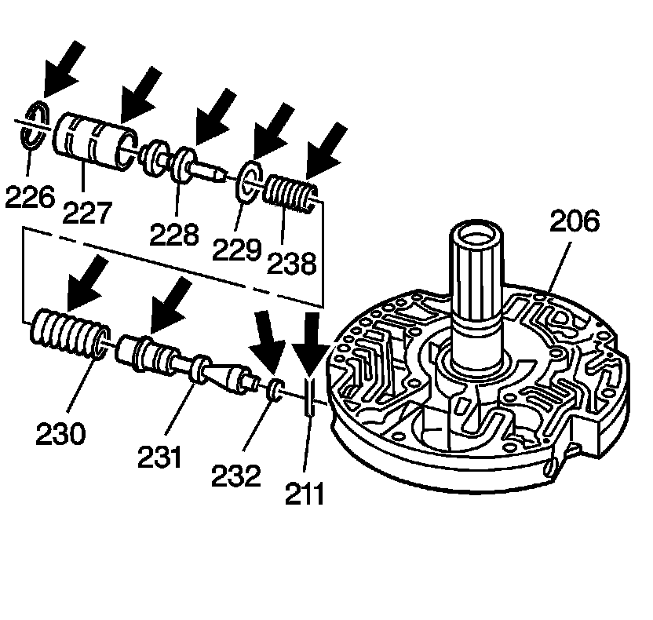
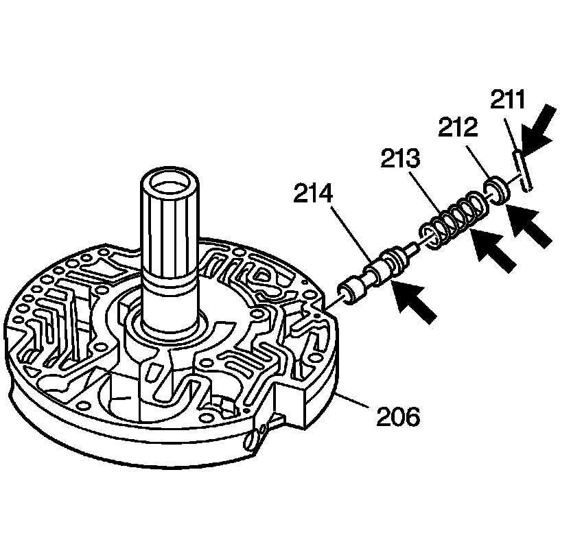
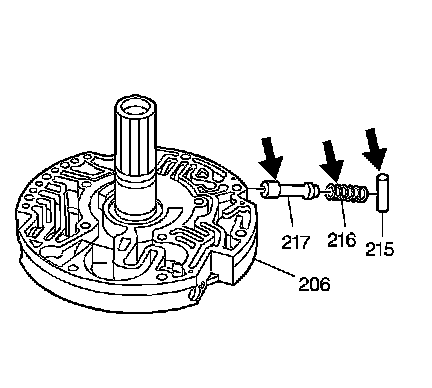
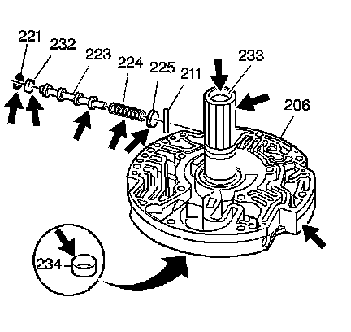
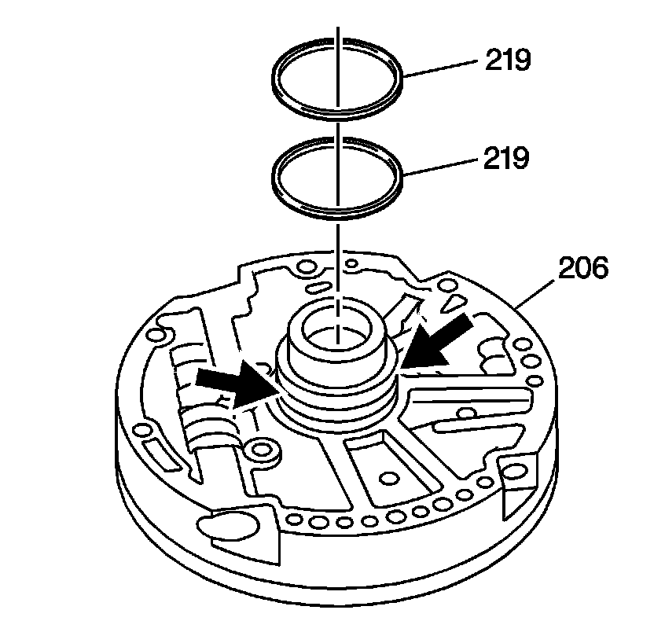

Transmission Oil Pump Cover Disassemble
Transmission Oil Pump Cover Disassemble

Caution: Valve springs can be tightly compressed. Use care when removing retainers and plugs. Personal injury could result.
1. Remove the reverse boost valve bushing retainer ring (226) from the oil pump cover (206).
2. Remove the reverse boost valve bushing (227).
3. Remove the reverse boost valve (228).
4. Remove the pressure regulator valve spring retainer (229).
5. Remove the pressure regulator valve inner (238) and outer springs (230).
6. Remove the pressure regulator valve (231).
7. Remove the pressure regulator valve bore plug (232).
8. Remove the pressure regulator valve bore plug pin (211).
9. Inspect the pressure regulator valve components for chips, burrs, distortion, plugged oil passages.

10. Remove the converter regulator valve bore plug pin (211) from the oil pump cover (206).
11. Remove the converter regulator valve bore plug (212).
12. Remove the converter regulator valve spring (213).
13. Remove the converter regulator valve (214).
14. Inspect the converter regulator valve components for chips, burrs, and distortion.

15. Remove the TCC enable valve spring retainer sleeve (215) from the oil pump cover (206).
16. Remove the TCC enable valve spring (216).
17. Remove the TCC enable valve (217).
18. Inspect the TCC enable valve components for chips, burrs, and distortion.

19. Remove the TCC shift valve bore plug retainer ring (221) from the oil pump cover (206).
20. Remove the pressure regulator (TCC shift) valve bore plug (232).
21. Remove the TCC shift valve (223).
22. Remove the TCC shift valve spring (224).
23. Remove the TCC shift valve spring seat (225).
24. Remove the TCC shift valve spring seat pin (211).
25. Inspect the TCC shift valve components for chips, burrs, and distortion.
26. Inspect the oil pump cover vent hole for blockage.
27. Inspect the stator shaft splines for damage.
28. Inspect the turbine shaft bushings (233, 234) for wear, and galling.

29. Remove the overrun clutch housing oil seal rings (219) from the oil pump cover (206).
30. Inspect the overrun clutch housing oil seal ring grooves for nicks, burrs, and debris.